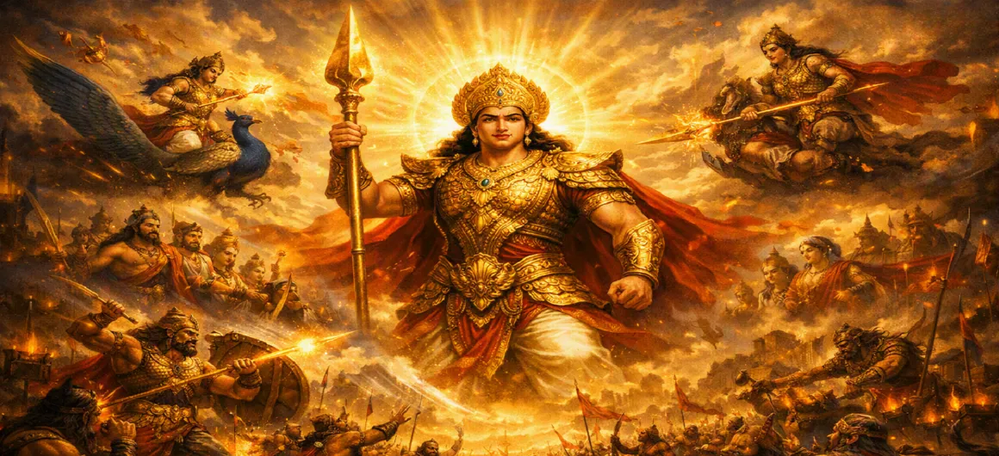

कुमार के वीरतापूर्ण कार्य
कुमार खण्ड का अध्याय 25 भगवान स्कंद की लुभावनी मार्शल कौशल, सर्वोच्च सामरिक प्रतिभा और बेजोड़ दिव्य वीरता को दर्शाता है क्योंकि वह राक्षसी ताकतों को खत्म करने के लिए युद्ध में प्रवेश करते हैं।
अपने दिव्य हथियारों के प्रत्येक प्रहार से, दिव्य सेनापति निराशा को विजय में बदल देता है, और देवताओं के दिलों को असीम आशा से भर देता है।
अध्याय 25 की मुख्य बातें और पूर्ण अवलोकन
दिव्य तेज
कुमार की शानदार उपस्थिति दिव्य सेना को प्रेरित कर रही है।
अद्वितीय तीरंदाज़ी
शत्रुओं पर प्रहार करते हुए सटीक, दिव्य बाणों की अनवरत वर्षा।
राक्षसी मार्ग
कुमार की शक्ति के आगे प्रमुख राक्षस सेनापति हारते रहे।
टूटता हुआ भ्रम
शुद्ध आध्यात्मिक शक्ति से काले राक्षसी जादू को दूर करना।
देवताओं की रक्षा करना
शत्रु के भारी दबाव से दिव्य योद्धाओं की रक्षा करना।
सेनापति की वीरता
यह प्रदर्शित करते हुए कि उन्हें दिव्य यजमानों का नेतृत्व करने के लिए क्यों चुना गया था।
इस अध्याय में विस्तृत मुख्य विषय
1. कुमार युद्धक्षेत्र में प्रवेश करते हैं
भगवान स्कंद अपने भव्य दिव्य रथ पर सवार होकर चल रहे युद्ध में प्रवेश करते हैं। उनका दीप्तिमान रूप एक तीव्र, चकाचौंध कर देने वाली रोशनी बिखेरता है जो तुरंत दोनों सेनाओं का ध्यान आकर्षित करता है, राक्षसों के दिलों में भय पैदा करता है और थके हुए देवताओं को फिर से जीवंत करता है।
2. युद्ध में राक्षसी गढ़ों का विनाश
अद्वितीय सटीकता के साथ, कुमार दिव्य तीरों की लहरें छोड़ते हैं जो दुश्मन के रैंकों को भेद देते हैं। उसके हमले के प्रभाव से राक्षसों द्वारा बनाए गए रथ, युद्ध इंजन और रक्षात्मक बैरिकेड धूल में बिखर गए, जिससे दैवीय इच्छा के विरुद्ध डार्क इंजीनियरिंग की निरर्थकता साबित हुई।
3. शक्तिशाली राक्षसी सेनापतियों को परास्त करना
जैसे ही प्रमुख राक्षसी सेनापति युवा दिव्य सेनापति को चुनौती देने के लिए आगे बढ़ते हैं, उन्हें त्वरित और निर्णायक न्याय मिलता है। एक-एक करके, तारकासुर के ये शक्तिशाली योद्धा कुमार के निरंतर हमले के सामने गिर गए, जिससे राक्षसी वर्गों में घबराहट और अव्यवस्था तेजी से फैलने लगी।
4. दिव्य अस्त्र-शस्त्र एवं वेल का प्रदर्शन
भगवान स्कंद देवताओं द्वारा प्रदत्त विभिन्न दिव्य हथियारों का उपयोग करते हैं, विशेष रूप से उनका दिव्य भाला (वेल)। प्रत्येक हथियार सचेत, केंद्रित इरादे से संचालित होता है, मायावी चालों को काटता है, अंधेरे जादू को बेअसर करता है, और राक्षसी योद्धाओं के विशाल महासागर के माध्यम से एक स्पष्ट रास्ता बनाता है।
5. देवताओं के बीच मनोबल बहाल करना
कुमार की अद्भुत वीरता को देखकर, हतोत्साहित दिव्य सेना अपना खोया हुआ साहस पुनः प्राप्त कर लेती है। युवा सेनापति की पूर्ण निपुणता और निडर नेतृत्व से प्रेरित होकर, इंद्र और अन्य देवता जोर-जोर से जयकार करते हैं, जिससे युद्ध का रुख निर्णायक रूप से स्वर्ग के पक्ष में हो जाता है।
6. अध्याय 26 की ओर (कुमार ने तारकासुर का सामना किया)
कुमार के अथक कारनामों से राक्षसी सेना बुरी तरह पराजित हो गई और पीछे हटने को मजबूर हो गई, सर्वोच्च अत्याचारी तारकासुर के पास खुद मैदान में उतरने के अलावा कोई विकल्प नहीं बचा। यह महत्वपूर्ण विकास सीधे अध्याय 26 में ले जाता है: **कुमार ने तारकासुर का सामना किया**।
अध्याय 25 की मुख्य शिक्षाएँ और आध्यात्मिक तथ्य
पवित्रता की शक्ति
दैवीय पवित्रता सहजता से नकारात्मकता की घनी परतों को दूर कर देती है।
केंद्रित इरादा
पाशविक अराजकता पर परिशुद्धता और आध्यात्मिक अनुशासन की विजय होती है।
साहसी नेतृत्व
एक सच्चा नेता दूसरों में आशा जगाता है और ताकत बहाल करता है।
बाधाओं पर काबू पाना
जागरूकता के आध्यात्मिक हथियार आंतरिक भ्रमों को तोड़ देते हैं।
ज्वार को मोड़ना
जब उच्च चेतना कार्य करती है तो निराशा विजय में बदल जाती है।
ईश्वरीय कृपा
अनुग्रह जमे हुए अहंकार के विरुद्ध एक अजेय शक्ति के रूप में कार्य करता है।
आध्यात्मिक चिंतन
अध्याय 25 दर्शाता है कि कैसे उच्च आध्यात्मिक जागरूकता (कुमार) जटिल भावनात्मक और मानसिक बाधाओं को सक्रिय रूप से काटती है। जब हम अपनी आंतरिक चुनौतियों पर सचेत अनुशासन और ज्ञान लागू करते हैं, तो नकारात्मकता के भारी बादल छंटने लगते हैं, जिससे स्पष्टता, ताकत और आंतरिक शांति के लिए जगह बनती है।
अध्याय 25 का संदेश जीना
दैनिक विकर्षणों और मानसिक अव्यवस्था से बचने के लिए केंद्रित जागरूकता की शक्ति का उपयोग करें।
चुनौतीपूर्ण समय में दूसरों के लिए शक्ति और प्रोत्साहन का स्रोत बनें।
लगातार बुरी आदतों पर काबू पाने के लिए आध्यात्मिक अभ्यास की परिवर्तनकारी शक्ति पर भरोसा रखें।
प्रमुख आध्यात्मिक अवधारणाएँ
दिव्य सेनापति की अद्वितीय वीरता एवं वीरतापूर्ण पराक्रम।
माया के विरुद्ध दिव्य अस्त्रों की प्रज्वलन शक्ति।
धर्मात्माओं में साहस एवं मनोबल की पुनर्स्थापना।
नकारात्मक शक्तियों का व्यवस्थित विनाश।
आध्यात्मिक चेतना का दीप्तिमान प्रकाश।
अज्ञानता पर आसन्न विजय की सुबह।
अध्याय सारांश
कुमार खण्ड अध्याय 25 में भगवान स्कंद की लुभावनी मार्शल उपलब्धियों का विवरण दिया गया है। अपनी बेजोड़ शक्ति के माध्यम से, दिव्य सेनापति राक्षसी गढ़ों को नष्ट कर देता है, शक्तिशाली सेनापतियों को परास्त करता है, और दिव्य सेना में आशा बहाल करता है, और तारकासुर के साथ अपने अंतिम मुकाबले के लिए मंच तैयार करता है।
अक्सर पूछे जाने वाले प्रश्न
1. कुमार खण्ड अध्याय 25 का मुख्य विषय क्या है?
अध्याय 25 युद्ध के मैदान में भगवान स्कंद (कुमार) के असाधारण मार्शल कारनामे, सामरिक प्रतिभा और बेजोड़ दिव्य वीरता पर प्रकाश डालता है क्योंकि वह राक्षसी रैंकों को नष्ट कर देता है।
2. भगवान स्कंद युद्धभूमि को किस प्रकार प्रभावित करते हैं?
वह अद्वितीय ऊर्जा के साथ मैदान में प्रवेश करता है, दिव्य हथियारों का उपयोग करता है जो आसानी से राक्षसी जादू को बेअसर कर देता है और हजारों शत्रु योद्धाओं को परास्त करता है, जिससे दिव्य शक्तियों को प्रेरणा मिलती है।
3. अध्याय 25 के बाद कौन सा अध्याय आता है?
अगला अध्याय अध्याय 26 है, जिसका शीर्षक है 'कुमार ने तारकासुर का सामना किया'।
"अंधकारमय चमक और अजेय दिव्य हथियारों के साथ, भगवान स्कंद ने राक्षसी रैंकों को नष्ट कर दिया और स्वर्ग में आशा बहाल की।"
कुमार खण्ड के माध्यम से जारी रखें
अध्याय 25 में कुमार के वीरतापूर्ण कार्यों का विवरण है। अगले अध्याय को जारी रखें, कुमार ने तारकासुर का सामना किया।